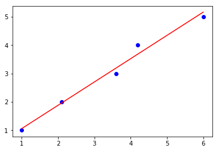

LinearRegression: An implementation of ordinary least-squares linear regression
A implementation of Ordinary Least Squares simple and multiple linear regression.
from mlxtend.regressor import LinearRegression
Overview
Illustration of a simple linear regression model:

In Ordinary Least Squares (OLS) Linear Regression, our goal is to find the line (or hyperplane) that minimizes the vertical offsets. Or in other words, we define the best-fitting line as the line that minimizes the sum of squared errors (SSE) or mean squared error (MSE) between our target variable (y) and our predicted output over all samples in our dataset of size .
Now, LinearRegression implements a linear regression model for performing ordinary least squares regression using one of the following five approaches:
- Normal Equations
- QR Decomposition Method
- SVD (Singular Value Decomposition) method
- Gradient Descent
- Stochastic Gradient Descent
Normal Equations (closed-form solution)
The closed-form solution should be preferred for "smaller" datasets where calculating (a "costly") matrix inverse is not a concern. For very large datasets, or datasets where the inverse of may not exist (the matrix is non-invertible or singular, e.g., in case of perfect multicollinearity), the QR, SVD or gradient descent approaches are to be preferred.
The linear function (linear regression model) is defined as:
where is the response variable, is an -dimensional sample vector, and is the weight vector (vector of coefficients). Note that represents the y-axis intercept of the model and therefore .
Using the closed-form solution (normal equation), we compute the weights of the model as follows:
Stable OLS via QR Factorization
The QR decomposition method offers a more numerically stable alternative to the closed-form, analytical solution based on the "normal equations," and it can be used to compute the inverse of large matrices more efficiently.
QR decomposition method decomposes given matrix into two matrices for which an inverse can be easily obtained. For instance, a given matrix , the QR decomposition into two matrices is:
where
is an orthonormal matrix, such that . The second matrix is an upper triangular matrix.
The weight parameters of the ordinary least squares regression model can then be computed as follows [1]:
Stable OLS via Singular Value Decomposition
Another alternative way for obtaining the OLS model weights in a numerically stable fashion is by Singular Value Decomposition (SVD), which is defined as:
for a given matrix .
Then, it can be shown that the pseudo-inverse of , , can be obtained as follows [1]:
Note that while is the diagonal matrix consisting of singular values of , is the diagonal matrix consisting of the reciprocals of the singular values.
The model weights can then be computed as follows:
Please note that this OLS method is computationally most inefficient. However, it is a useful approach when the direct method (normal equations) or QR factorization cannot be applied or the normal equations (via ) are ill-conditioned [3].
Gradient Descent (GD) and Stochastic Gradient Descent (SGD)
See Gradient Descent and Stochastic Gradient Descent and Deriving the Gradient Descent Rule for Linear Regression and Adaline for details.
Random shuffling is implemented as:
- for one or more epochs
- randomly shuffle samples in the training set
- for training sample i
- compute gradients and perform weight updates
- for training sample i
- randomly shuffle samples in the training set
References
- [1] Chapter 3, page 55, Linear Methods for Regression. Trevor Hastie; Robert Tibshirani; Jerome Friedman (2009). The Elements of Statistical Learning: Data Mining, Inference, and Prediction (2nd ed.). New York: Springer. (ISBN 978–0–387–84858–7)
- [2] G. Strang, Linear Algebra and Its Applications, 2nd Ed., Orlando, FL, Academic Press, Inc., 1980, pp. 139-142.
- [3] Douglas Wilhelm Harder. Numerical Analysis for Engineering. Section 4.8, ill-conditioned Matrices
Example 1 - Closed Form Solution
import numpy as np
import matplotlib.pyplot as plt
from mlxtend.regressor import LinearRegression
X = np.array([ 1.0, 2.1, 3.6, 4.2, 6])[:, np.newaxis]
y = np.array([ 1.0, 2.0, 3.0, 4.0, 5.0])
ne_lr = LinearRegression()
ne_lr.fit(X, y)
print('Intercept: %.2f' % ne_lr.b_)
print('Slope: %.2f' % ne_lr.w_[0])
def lin_regplot(X, y, model):
plt.scatter(X, y, c='blue')
plt.plot(X, model.predict(X), color='red')
return
lin_regplot(X, y, ne_lr)
plt.show()
Intercept: 0.25
Slope: 0.81

Example 2 - QR decomposition method
import numpy as np
import matplotlib.pyplot as plt
from mlxtend.regressor import LinearRegression
X = np.array([ 1.0, 2.1, 3.6, 4.2, 6])[:, np.newaxis]
y = np.array([ 1.0, 2.0, 3.0, 4.0, 5.0])
qr_lr = LinearRegression(method='qr')
qr_lr.fit(X, y)
print('Intercept: %.2f' % qr_lr.b_)
print('Slope: %.2f' % qr_lr.w_[0])
def lin_regplot(X, y, model):
plt.scatter(X, y, c='blue')
plt.plot(X, model.predict(X), color='red')
return
lin_regplot(X, y, qr_lr)
plt.show()
Intercept: 0.25
Slope: 0.81

Example 3 - SVD method
import numpy as np
import matplotlib.pyplot as plt
from mlxtend.regressor import LinearRegression
X = np.array([ 1.0, 2.1, 3.6, 4.2, 6])[:, np.newaxis]
y = np.array([ 1.0, 2.0, 3.0, 4.0, 5.0])
svd_lr = LinearRegression(method='svd')
svd_lr.fit(X, y)
print('Intercept: %.2f' %svd_lr.b_)
print('Slope: %.2f' % svd_lr.w_[0])
def lin_regplot(X, y, model):
plt.scatter(X, y, c='blue')
plt.plot(X, model.predict(X), color='red')
return
lin_regplot(X, y, svd_lr)
plt.show()
Intercept: 0.25
Slope: 0.81

Example 4 - Gradient Descent
import numpy as np
import matplotlib.pyplot as plt
from mlxtend.regressor import LinearRegression
X = np.array([ 1.0, 2.1, 3.6, 4.2, 6])[:, np.newaxis]
y = np.array([ 1.0, 2.0, 3.0, 4.0, 5.0])
gd_lr = LinearRegression(method='sgd',
eta=0.005,
epochs=100,
minibatches=1,
random_seed=123,
print_progress=3)
gd_lr.fit(X, y)
print('Intercept: %.2f' % gd_lr.b_)
print('Slope: %.2f' % gd_lr.w_)
def lin_regplot(X, y, model):
plt.scatter(X, y, c='blue')
plt.plot(X, model.predict(X), color='red')
return
lin_regplot(X, y, gd_lr)
plt.show()
Iteration: 100/100 | Cost 0.08 | Elapsed: 0:00:00 | ETA: 0:00:00
Intercept: 0.22
Slope: 0.82

# Visualizing the cost to check for convergence and plotting the linear model:
plt.plot(range(1, gd_lr.epochs+1), gd_lr.cost_)
plt.xlabel('Epochs')
plt.ylabel('Cost')
plt.ylim([0, 0.2])
plt.tight_layout()
plt.show()

Example 5 - Stochastic Gradient Descent
import numpy as np
import matplotlib.pyplot as plt
from mlxtend.regressor import LinearRegression
X = np.array([ 1.0, 2.1, 3.6, 4.2, 6])[:, np.newaxis]
y = np.array([ 1.0, 2.0, 3.0, 4.0, 5.0])
sgd_lr = LinearRegression(method='sgd',
eta=0.01,
epochs=100,
random_seed=0,
minibatches=len(y))
sgd_lr.fit(X, y)
print('Intercept: %.2f' % sgd_lr.w_)
print('Slope: %.2f' % sgd_lr.b_)
def lin_regplot(X, y, model):
plt.scatter(X, y, c='blue')
plt.plot(X, model.predict(X), color='red')
return
lin_regplot(X, y, sgd_lr)
plt.show()
Intercept: 0.82
Slope: 0.24

plt.plot(range(1, sgd_lr.epochs+1), sgd_lr.cost_)
plt.xlabel('Epochs')
plt.ylabel('Cost')
plt.ylim([0, 0.2])
plt.tight_layout()
plt.show()

Example 6 - Stochastic Gradient Descent with Minibatches
import numpy as np
import matplotlib.pyplot as plt
from mlxtend.regressor import LinearRegression
X = np.array([ 1.0, 2.1, 3.6, 4.2, 6])[:, np.newaxis]
y = np.array([ 1.0, 2.0, 3.0, 4.0, 5.0])
sgd_lr = LinearRegression(method='sgd',
eta=0.01,
epochs=100,
random_seed=0,
minibatches=3)
sgd_lr.fit(X, y)
print('Intercept: %.2f' % sgd_lr.b_)
print('Slope: %.2f' % sgd_lr.w_)
def lin_regplot(X, y, model):
plt.scatter(X, y, c='blue')
plt.plot(X, model.predict(X), color='red')
return
lin_regplot(X, y, sgd_lr)
plt.show()
Intercept: 0.24
Slope: 0.82

plt.plot(range(1, sgd_lr.epochs+1), sgd_lr.cost_)
plt.xlabel('Epochs')
plt.ylabel('Cost')
plt.ylim([0, 0.2])
plt.tight_layout()
plt.show()

API
LinearRegression(method='direct', eta=0.01, epochs=50, minibatches=None, random_seed=None, print_progress=0)
Ordinary least squares linear regression.
Parameters
-
method: string (default: 'direct')For gradient descent-based optimization, use
sgd(seeminibatchparameter for further options). Otherwise, ifdirect(default), the analytical method is used. For alternative, numerically more stable solutions, use eitherqr(QR decomopisition) orsvd(Singular Value Decomposition). -
eta: float (default: 0.01)solver learning rate (between 0.0 and 1.0). Used with
method ='sgd'. (Seemethodsparameter for details) -
epochs: int (default: 50)Passes over the training dataset. Prior to each epoch, the dataset is shuffled if
minibatches > 1to prevent cycles in stochastic gradient descent. Used withmethod = 'sgd'. (Seemethodsparameter for details) -
minibatches: int (default: None)The number of minibatches for gradient-based optimization. If None: Direct method, QR, or SVD method (see
methodparameter for details) If 1: Gradient Descent learning If len(y): Stochastic Gradient Descent learning If 1 < minibatches < len(y): Minibatch learning -
random_seed: int (default: None)Set random state for shuffling and initializing the weights. Used in
method = 'sgd'. (Seemethodsparameter for details) -
print_progress: int (default: 0)Prints progress in fitting to stderr if
method = 'sgd'. 0: No output 1: Epochs elapsed and cost 2: 1 plus time elapsed 3: 2 plus estimated time until completion
Attributes
-
w_: 2d-array, shape={n_features, 1}Model weights after fitting.
-
b_: 1d-array, shape={1,}Bias unit after fitting.
-
cost_: listSum of squared errors after each epoch; ignored if solver='normal equation'
Examples
For usage examples, please see http://rasbt.github.io/mlxtend/user_guide/regressor/LinearRegression/
Methods
fit(X, y, init_params=True)
Learn model from training data.
Parameters
-
X: {array-like, sparse matrix}, shape = [n_samples, n_features]Training vectors, where n_samples is the number of samples and n_features is the number of features.
-
y: array-like, shape = [n_samples]Target values.
-
init_params: bool (default: True)Re-initializes model parameters prior to fitting. Set False to continue training with weights from a previous model fitting.
Returns
self: object
get_params(deep=True)
Get parameters for this estimator.
Parameters
-
deep: boolean, optionalIf True, will return the parameters for this estimator and contained subobjects that are estimators.
Returns
-
params: mapping of string to anyParameter names mapped to their values.'
adapted from https://github.com/scikit-learn/scikit-learn/blob/master/sklearn/base.py Author: Gael Varoquaux gael.varoquaux@normalesup.org License: BSD 3 clause
predict(X)
Predict targets from X.
Parameters
-
X: {array-like, sparse matrix}, shape = [n_samples, n_features]Training vectors, where n_samples is the number of samples and n_features is the number of features.
Returns
-
target_values: array-like, shape = [n_samples]Predicted target values.
set_params(params)
Set the parameters of this estimator.
The method works on simple estimators as well as on nested objects
(such as pipelines). The latter have parameters of the form
<component>__<parameter> so that it's possible to update each
component of a nested object.
Returns
self
adapted from https://github.com/scikit-learn/scikit-learn/blob/master/sklearn/base.py Author: Gael Varoquaux gael.varoquaux@normalesup.org License: BSD 3 clause
ython